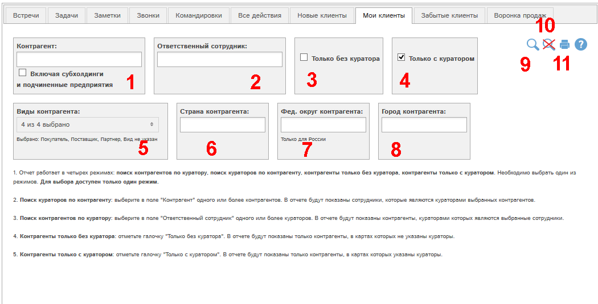
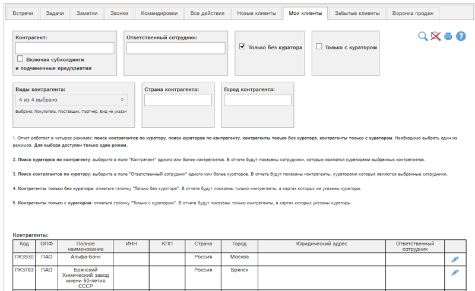

Отчет работает в четырех режимах:
- поиск контрагентов по куратору,
- поиск кураторов по контрагенту,
- контрагенты только без куратора,
- контрагенты только с куратором.
Необходимо выбрать один из режимов. Для выбора доступен только один режим.
Рассмотрим форму отчета.

Рис. Форма отчета Мои клиенты.
Доступны следующие фильтры и кнопки:
- Поиск кураторов по контрагенту: выберите в поле "Контрагент" одного или более контрагентов. В отчете будут показаны сотрудники, которые являются кураторами выбранных контрагентов. Галочка "Включая субхолдинги и подчиненные предприятия" позволяет выбрать в отчет также данные по субхолдингам и подчиненным предприятиям выбранных контрагентов.
- Поиск контрагентов по куратору: выберите в поле "Ответственный сотрудник" одного или более кураторов. В отчете будут показаны контрагенты, кураторами которых являются выбранные сотрудники.
- Контрагенты только без куратора: отметьте галочку "Только без куратора". В отчете будут показаны только контрагенты, в картах которых не указаны кураторы.
- Контрагенты только c куратором: отметьте галочку "Только с куратором". В отчете будут показаны только контрагенты, в картах которых указаны кураторы.
- Отбор по виду контрагента - поле доступно при выборе блоков 2-4.
- Отбор по виду контрагента
- Отбор по стране контрагента
- Отбор по федеральному округу контрагента. Функция доступна только для России. При выборе федерального округа автоматически выбирается страна Россия.
- Отбор по городу контрагента.
- Показать отчет по выбранным фильтрам
- Сбросить все фильтры
- Получить печатную версию отчета по выбранным фильтрам в pdf-формате.
Рассмотрим пример отчета, запросив список всех контрагентов без куратора. Для этого отметим галочку (3) и нажмем кнопку :

По всем основным колонкам отчета доступна сортировка. Для сортировки по определенной колонке кликните по кнопке или в соответствующей колонке таблицы.